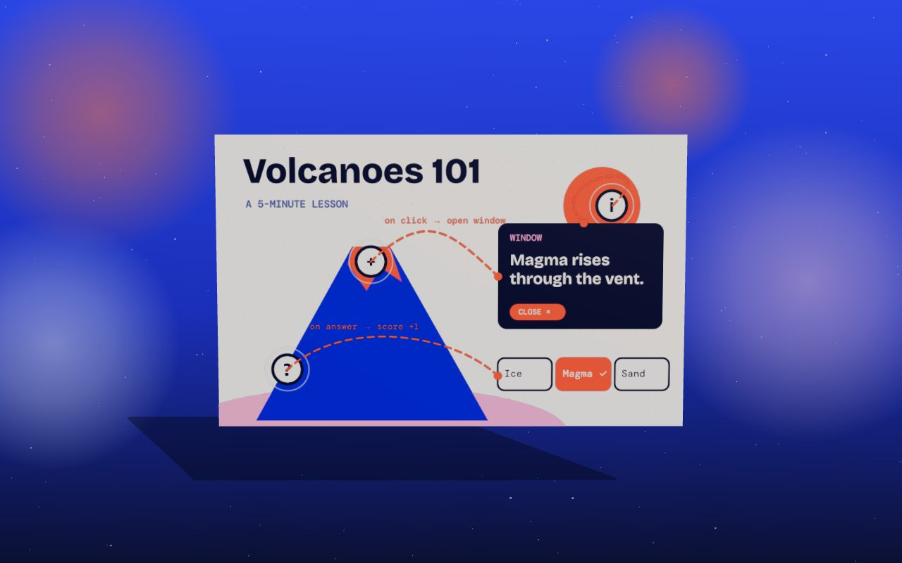
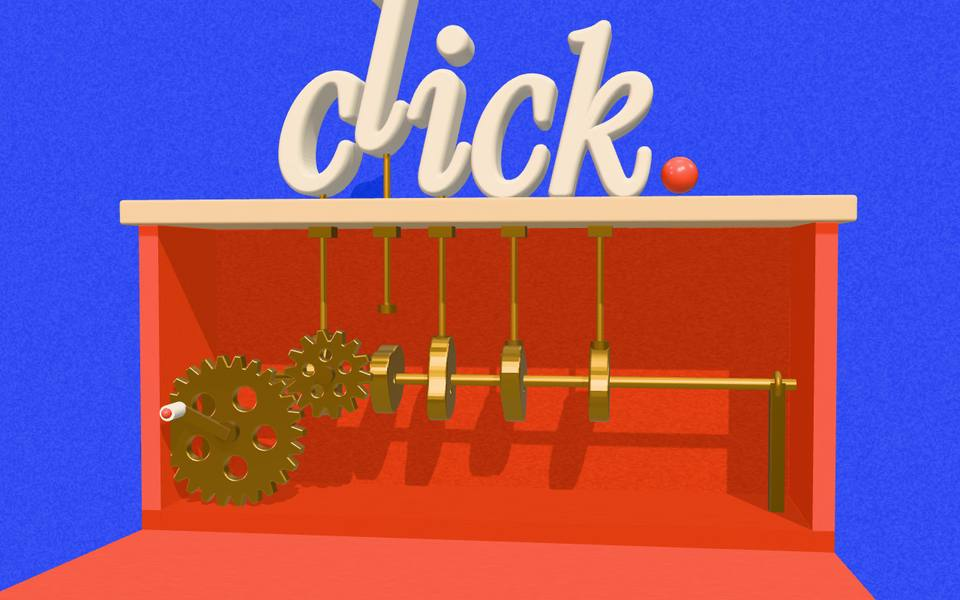
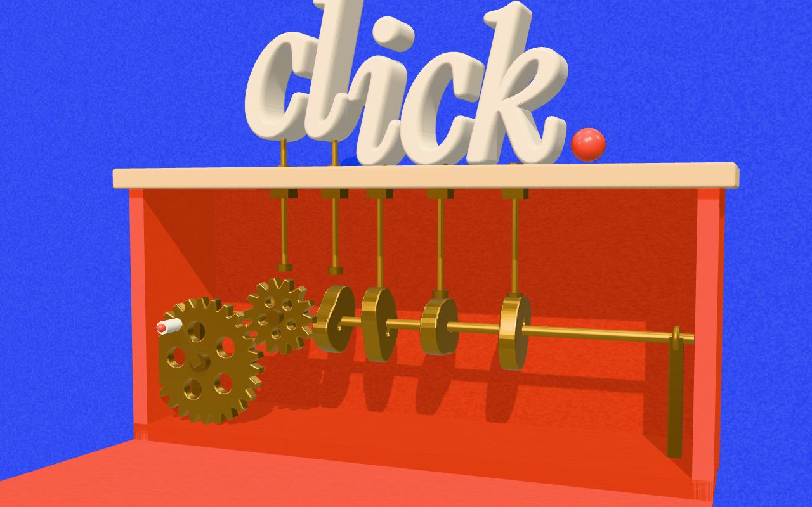
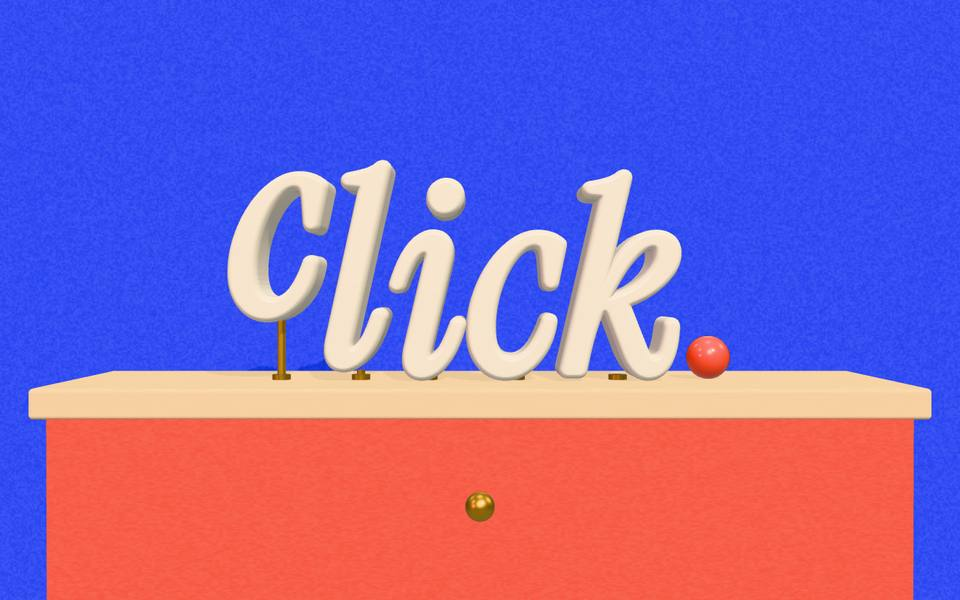

Genially Scrolly · every block
Kitchen sink.
Each block below is plain HTML with a data-scrolly attribute. Scroll, hover and click.
Most content is made to be looked at. This page is made to be scrolled, touched and remembered.
Fill on scroll
Highlight the key phrase as people read, then the next one.
DECODED THE FIRST TIME IT IS SEEN
LookClickPlay
QuizzesGamesLessonsReports
Escape roomsCoursesMapsStories
Sticky graphic, scrolling steps



One slide. It looks flat, like any other.
Six layers. Picture, title, hotspots, window, quiz and logic.
One engine. Every click runs something underneath.
Games
Quizzes
2015
Two friends, one idea.
2018
Schools pick it up.
2020
Remote teaching.
2026
Everyone builds.
Purple
Lime
Pink
190+
Next room.

Open
up
Behind the curtain

hub
Learn
Work
Create
you found it
Created · 12 weekssample label
Best weekweek of 19 Oct
Countriesand counting
people using Genially
Founded in Córdoba.
Teachers adopt it.
Remote classes.
AI drafts.

Tilt me
and me
me too